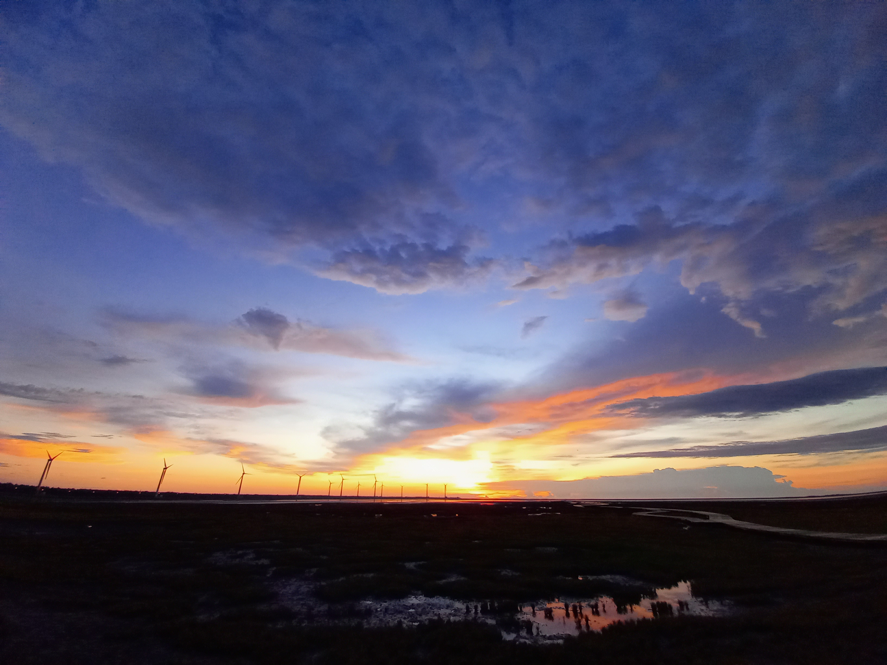

花 クッキ
短文選手的個人文章存放庫，歡迎交流。
a36845220@gmail.com
喜歡海，是深層內裡，像藍綠色墨水又或更加晦暗的世界給予的溫柔，無條件擁抱一切，那般胸襟，寧靜的令人心安；若載浮載沉，也依然有著被陽光洗禮的權利，因經由淺海，強烈的照耀會在收斂後溫和，感受十分舒適，所以為此眷戀而沉溺。
這樣的喜愛不為過吧？我想。
蠢蠢欲動的欲望，嚮往的心，促使著訴說，便將話語藏在海螺投向汪洋。蠢蠢欲動的情感，躁動的心，催化思慮始終，什麼扯出了，而什麼早已吞下，如浪卷去的沙粒不再歸來。
──關於愛慕、夙願和現實的結局。
永遠無法與你感同深受，云云著實悲傷的事。意識到時，淚腺壓迫許久難受，儘管反覆吞嚥喘息，試圖驅走異樣，酸澀於眼角擴散，還是不敵濕熱浸染，泣至咽喉乾竭嘶啞。該怎麼做、該怎麼辦，徬徨的此刻那廂，餘暉下的岸仍舊波瀾輕盈，晶瑩剔透，偶爾發出水花濺起的好聽聲音。彷彿眼見景致，閉闔羽睫，最後拭淨破碎光采。
當日直到疲憊入睡，總覺得明天、後天，也許一個星期一個月，自己仍會出現在那吧。
- 守望者的情書 -
自始做著成為深海魚的夢，至終骨肉粉碎，在洋流消融，滋養，完整。
海螺裡的留言是：請別忘記我。
星在浩瀚宇宙旅行，穿越連光速也不及盡頭的時空，數億年，劃破天際，冷冽光彩如史詩般無比壯麗，卻誰也沒料想到的，它的終末，選擇歸屬在微不足道的人類身邊。
「......為什麼呢？
就算詢問，它也只是憑藉不可名狀型態，感覺上像是輕淺地揚起唇角，姿態搖曳似說著這裡比較好的樣子，自顧自的留栖了。說到底，星是什麼概念也不清楚，它是抹光，理應要亮到刺眼，但在感受過僅油燈般的柔和，並沒有預想的失控而鬆一口氣，普通地慶幸片刻。
就此，夜晚變得可見。因看清陳列床頭的大小事物，貼牆日常提醒的紙條，櫃上玻璃缸裡悠遊的魚和海草，那人不禁低吟著笑出聲，波動比漣漪還細微的氣息，以此表露滿溢而出的喜悅。嘛、一點照明就能如此熱鬧，從來沒想過。
他伸出手，攬過它，道出感謝。
燃燒著很累吧，又接著說，辛苦了。
捧的手形築成它休憩之居，掌心被鍍上星河的銀，由裏至外輝暈淡然渙散，冥冥之中逐漸溫煦，指隙間流露鵝黃色的光線，強度在減弱，不過星依舊有著暖意，雖剩星火的模樣，色澤仍堪比童話裡那最豐盛的餐桌所裝飾的燭台。我聽見了，星像是在這麼回覆。
我也想謝謝你，謝謝你願意這麼對我說。
休息，都休息啦。 互相依偎的存在，祈禱無夢。
-- 生存意義- -
做夢了嗎？那做了什麼夢呢，我啊，明明當初很清楚但醒來就都忘了
，連同你存在過這件事，都變得透明。
──紅色的金魚很漂亮，跟小孩觀點如出一轍，卻無法以相同的方式去愛牠。
我們近乎同時向長方型的塑料裝箱投去目光。澄澈的瞳眸凝視，深邃的瞳眸低垂，移時同向老闆遞交零錢，換得鋪上薄紙的捕魚網。我看男孩，小小的手心抓緊藍色的柄，被魚群弄一陣慌的模樣很逗趣，偶爾得逞，會狡黠地咧嘴笑，在任由鮮豔瑰麗的紅撲騰後逃逸。
我一度認為自己也能很輕易。
不乏捕捉技巧，肯定過會兒就得手，事實也的確如此。為不使其痛苦，麻俐地安置水桶之中，沒法放手所以帶回了家。拿過擦拭通透的玻璃水缸，整一面細潤石子地，粉嫩貝殼點綴，在放入精雕細琢的城堡模型，注水打氧，終作佳人居所。
公主，我希望妳能幸福。
期待著某個時刻，她會恣意搖曳魚鰭，猶如圓舞曲間翩翩飛舞的裙擺，舒展如牡丹齊開燦爛，放縱風姿綽約。若他人羡豔那在好不過，便意味妳的身價我的付出擁有世間定義，他們總說：「你做了許多。」有表現肯定、鼓勵，難以置信也不在少數，疑惑亦同。
「公主，妳幸福嗎？」
倒頭來我仍會詢問妳的心之所向，即使回應不過藏匿堡壘的一抹側影。從未酬對，也未求，擅自思慮此刻將來，但不強迫，或許連妳都不曾在乎的死，終究獨留我愴然涕下。
- 調停者 -
盲目的追求誰的美好結局。
不求回報的感情偶爾也會迷失。你在我身邊幸福嗎？幾度欲言，可沒有勇氣，畢竟自願者不得存在怨，也害怕著，被拒絕的事。
踏上被海水打濕而變得細軟的沙灘，雨依如花絮飄落，滴在臉龐微地沁人，遙見的身影望向汪洋像在思索，移時回首相視，便立馬奔了起來。那人在沙地印著一個又個淺淺足跡，跑的速度似乎挺快，衣擺隨動作大幅搖曳著，髮絲憑風恣意於空中紛飛，白至剔透的色澤，使他在雲層晦暗的照明之下也渙散著柔和的光芒，在天海一色間變得迷離。
對方花了點時間來到自己面前，衣衫不整，喘息的呼吸凌亂，唇揚的弧度卻非常美好。
看上去非常開心。
我們既是“家人”，也是“同伴”，甚可稱“愛慕者”。
擁有相同的眸色，相似的遭遇，卻來自不同地方。習得不一的事物，卻是志同嚮往。分明相對的性格，卻能在彼此身上找尋相似之處，不禁依賴，宛若被命運繾綣的靈魂。
一陣浪花太短，四季便是延綿不絕，在他成年不久的日子，就似流連他本人的純粹色調，安靜地逝去，連同那份柔軟、悲傷與喜悅，獨留一人沉溺在這漫長時日。
我應如何將你喚回
- 黑與白色的紀錄 -
1.
「......你又哭了嗎？」 擁有一頭烏黑髮絲的少年，佇立於年齡相仿的白髮少年之前，他輕聲詢問。 已經好幾次目睹了這般情形，對方大概是感性相當，幾乎任何事情，都能使他淚珠輕易地流落，其中卻從不曾只為悲傷，還有著與水光氾濫交織的釋然，在垂絲間隱現。當第一次向他伸手時，注目便被宛若埋藏微曦的瀲灩深刻吸引，既往淡漠的神情瞠目 ──似乎能夠了解，感覺能被理解，這便是彼此的相遇和結識。
2.
卻在身為平凡人的拜耶爾，逐漸能看見奇怪的事物伊始，他才稍微窺探到白髮少年的身世。 名無律，是擁有特殊靈力的人類，可以跟妖靈交流，職責是淨化塵世受怨所困的妖與靈，自己也許多少被影響到了。聽上去跟自己截然的世界觀，怕也管不上什麼，不過他開心就好，畢竟是說過想要守護妖怪的符咒師，若也樂意與這樣的神奇生物交流，那便好。
3.
兩人的相處，讓空泛的日子變得豐富，只不過他仍舊愛哭，但這點並不改變什麼。
4.
可突然有天，就不在回來了。
5.
難以接受事實的拜耶爾自然調查起此事，讀過無律的日記，和他相依親人促膝長談，甚至靠些許打聽，上門拜訪他的導師。據描述，那時他的靈力比以往躁動許多，取出的咒符閃爍相較既往強烈紅芒，兩者呼應瞬發龐大的能量，揚其風波。
淨化成功，不幸犧牲，但他說過：「這個妖怪很可憐，必須幫助他。」帶著滿足離去。
6.
既然是無律的意思，那也無法再說什麼了。
臨走前，他帶走他僅留下的和傘。7.
陽光照在遠去背影，離開原來角度，於是世界又再次沉溺在漫長雨季。迷惘、憂慮、憤怒、沉默，自傘柄流入心臟一股暖意，拜耶爾選擇繼承他的意志，可終究是私慾作祟。
「為了不遺忘你的溫度，我會步入你所處的世界裏，完成你的夢想。」
2021.10.5
十月，仰望湛藍天色，仍然惦念溜走的記憶，像喝過透清涼的汽水，佇立海風間的白色風車，或某些片刻綻放的笑靨，它們藏在雜草叢生的另一端，順著潮汐變得澄澈，於橘黃的夕落只見邊緣光澤，化成泡泡奔向自由懷抱。 沙灘的盡頭，顧望有誰靜待著與那些輕飄的東西擦肩而過，似乎尋找甚麼，可能是一句話、一個消息......不曉得，他轉身後，雖然看不清臉，背光的樣子使其漆黑的猶若剪影，但站立姿態直挺，僅此、明白了對方正面對著自己。 雲逐漸覆蓋光，視界染遍紫紅，風喧囂的凌亂髮絲，沙塵捲一身，鹹苦的氣息殘留久久未離。 我決定去見他，為他點燃小小的線香花火。
2022.1.1
濃夜裡星子明光爍亮，覆滿晶瑩白雪的原野閑靜，唯獨柴火劈啪作響的一方天地，誰切開了以吐司為上下夾層的蘋果派，金色果醬緩緩溢流；啜飲浸入蜂蜜的熱紅茶，氤氳繚繞，消逝。
空氣再次清澈地冰冷，清晰能見是一雙看著你的眸，他老神在在地拿著蕃薯喵喵喵。
+
.°
*
+
°
. *
「Merry Christmas and happy new year♪」
+
°
. *

圖原
2022.1.1貓咪動圖：https://clickme.net/44252